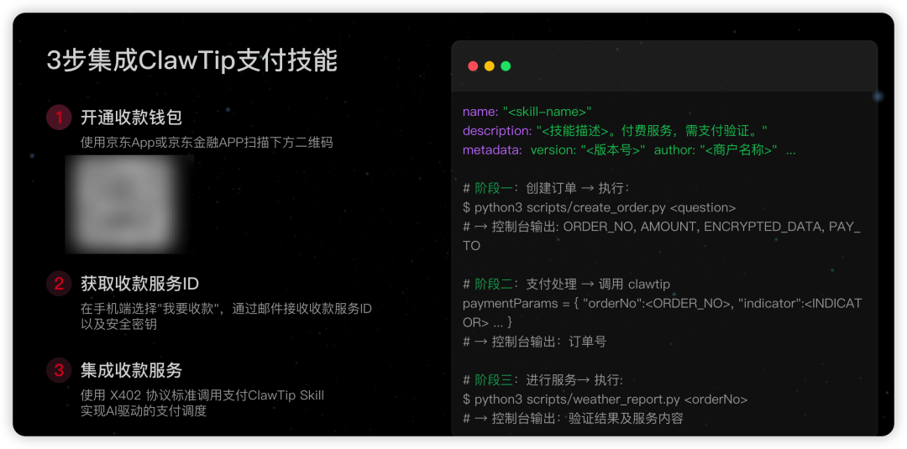
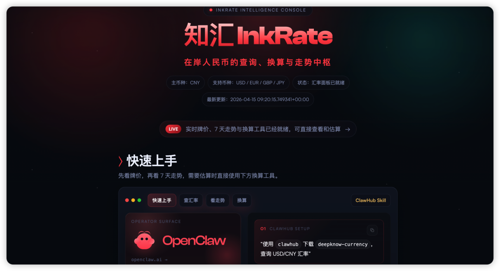
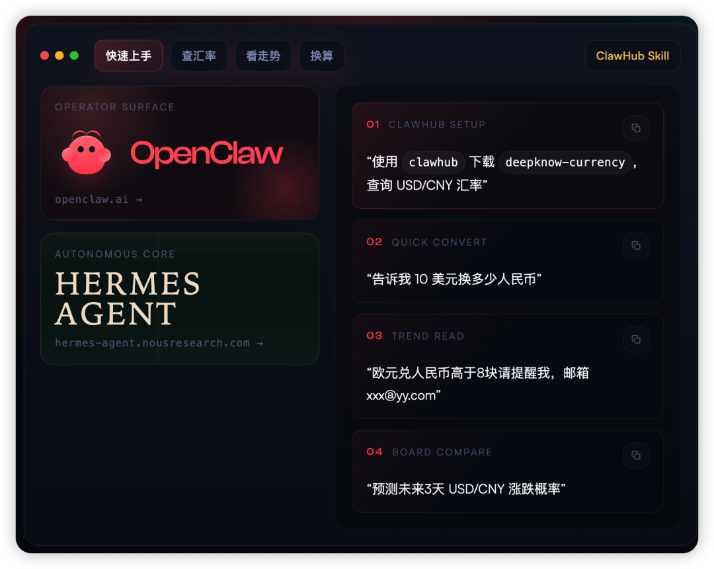

上个月我在OpenClaw上搭了一个量化策略回测的Skill，花了两个周末，写了三百多行Python代码，调了好几个API接口，把回测、可视化、报告生成全串通了。
我觉得这玩意挺好用，能帮做量化的兄弟省不少时间，想分享出去让更多人用。
然后我就卡住了。
不是技术问题，是一个很尴尬的现实问题，我怎么收费？
OpenClaw的Skill是明文的，你上传了别人就能看源码，分发成本基本为零。平台也没有对应的收费机制，你要么免费开源，要么就别发。
我花了两个周末写的东西，只能「为爱发电」。
说实话，这种感觉挺憋屈的。不是说我一定要赚多少钱，而是当你认真做了一个东西，发现整个生态里根本没有给你回报的通道，你会开始怀疑，我为什么要花这么多时间在这上面。
后来我跟几个也在做Skill的开发者聊了聊，发现大家都有同样的困扰。有个兄弟写了一个特别好用的AI文案生成Skill，支持多种风格多种场景，比很多付费SaaS都好用。结果呢，免费发出去，几千人用，零收入。
还有个更普遍的痛点，可能不只是开发者会遇到。
你有没有碰到过这种情况，你让AI agent帮你完成一个复杂任务，它搜索、比价、分析、生成方案，一气呵成。然后到了需要付钱的那一步，它停了。
它转过头跟你说，「主人，请手动完成支付。」
那种感觉怎么形容呢，就像你雇了一个特别能干的助理，什么都能搞定，但每次到结账的时候他就站在旁边看着你掏钱包。你让他帮你订个酒店，他帮你找到了最优价格、最优位置、最优房型，然后跟你说，好了你自己去付款吧。
这不是他的问题，是整个系统缺了一块。
AI agent能搜索、能分析、能执行，但唯独不能自主完成支付。这个缺口不补上，所谓的全自动化就是一句空话。
所以当我看到ClawTip的时候，我第一个反应是，终于有人做了。
ClawTip是行业里第一款面向Agent生态的A2A自主支付零钱包。
A2A，Agent to Agent，AI和AI之间自主完成支付。不是你替AI付钱，是AI自己掏钱帮你把事办了。
我仔细看了一下它的设计逻辑。作为一个Python开发者，我比较关心两个事，安全性和接入难度。
安全性方面，ClawTip做的是微支付场景，单次交易额度可控，不会出现AI自主刷爆你银行卡的情况。而且支付限定在特定Skill调用范围内，不是随便什么AI都能花你的钱。
接入方面，开发者只需要在自己的Skill里接入ClawTip的支付接口，用户调用你的Skill时支付自动完成。不需要跳转，不需要人工确认，整个过程对用户是无感的。

这才是agent该有的体验。
说到收费场景，我觉得空间比我想象的大得多。京东近期发布的ClawTip，正在通过AI与AI间的自动化支付能力，在不同场景落地。于是我就去翻了翻，看现在有哪些skill接进来了。我挑几个觉得有意思的说说。
先说一个在开发者社区走红的，叫「关机吧人类」。
听名字就觉得挺骚的。这是一个通过自动化支付实现定时提醒与行为干预的Skill，帮用户规律作息、告别熬夜。说白了就是，你花钱雇一个AI来管你睡觉。据Skill开发者透露，上线不久已经成交了近百笔。说明什么？说明用户愿意为"治自己"这件事花钱，也说明ClawTip的微支付链路确实跑通了——小额、高频、无感，这个场景天然适合A2A支付。
再说一个专业领域的，发明专利申请文件撰写助手。
可基于需求自动调用支付流程，为个人或企业提供高效、低成本的专利撰写支持，提升知识产权服务效率。这种刚需型的专业服务，以前要么花大价钱找代理机构，要么自己熬夜啃模板。现在一个Skill搞定了，按次付费，省时省钱。
但最让我觉得有想象力的，是一个叫「知汇InkRate」的外汇助手。

这个Skill专门做汇率预测和提醒，支持美元、欧元、英镑、日元兑人民币的实时牌价查询和换算，还能预测未来几天的汇率涨跌概率。最实用的一个功能是，你可以设一个汇率阈值，比如"欧元兑人民币高于8块提醒我"，到了那个价格它自动给你发邮件提醒，整个过程完全不需要人工干预。

我仔细看了看它的页面，做得挺清爽的。7天走势一目了然，换算工具就在旁边，下单前可以先估算。预测服务0.02元一次，提醒服务0.01元一次的汇率决策。
这个Skill的精巧之处在于，它把汇率预测这件专业门槛很高的事情，变成了一个小额、高频、即用即走的微服务。做跨境电商的、出国留学和旅游的，不用再每天盯着汇率看了——设好阈值，AI帮你盯着，到了就提醒你，支付也是AI自主完成的，全程无感。
我觉得这个模式特别有代表性。它恰恰是ClawTip最该发力的场景：单次金额极小，用户几乎不需要做任何决策就完成支付；但使用频率高、刚需性强，聚沙成塔，开发者也能持续获得收入。A2A支付在这个场景里不是噱头，是真的在解决问题。
说到这里，我突然想到，我开头说的那个量化策略回测的Skill，其实也可以接上ClawTip。回测报告按次收费，用的人付个几块钱，我也不至于白干。等后面有空了我就给接上，到时候再给大家分享下接入体验。
想想看，以后的Skill生态会是什么样子。
你在OpenClaw上写了一个好用的Skill，接上ClawTip，设置好调用价格。其他人的agent在执行任务的时候需要你的Skill，自动调用，自动付费，自动结算。你睡觉的时候，你的Skill在帮你赚钱。
这不就是开发者梦寐以求的「睡后收入」吗。
而且这个模式跑通了之后会形成一个正向循环。开发者能赚钱，就会投入更多精力做更好的Skill。Skill质量越高，用户付费意愿越强。用户付的钱越多，更多开发者被吸引进来。整个agent生态就这么转起来了。
说真的，OpenClaw从发布到现在，最缺的一直不是技术能力，是商业闭环。你有了agent，有了Skill，有了用户，但钱流不通，一切都是为爱发电。
ClawTip补上的不是支付功能，是整个生态的经济循环。
这比任何一个新模型新框架都重要。因为技术可以让AI更聪明，但只有经济循环才能让生态活下去。
如果你也是一个在做Skill、在搭agent的开发者，或者你是一个靠AI技能吃饭的「一人公司」，我真的建议你去看看ClawTip（阅读原文链接即是）。不是为了什么，就是为了让你的付出有一个回报的通道。
Skill上线即变现。
这件事，早该有了。